ELEMENTAL / CARETAKER
Field Clinic Route
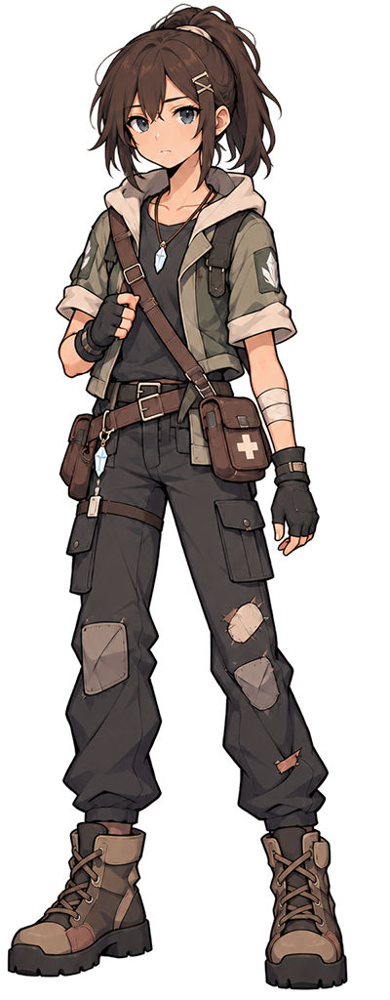
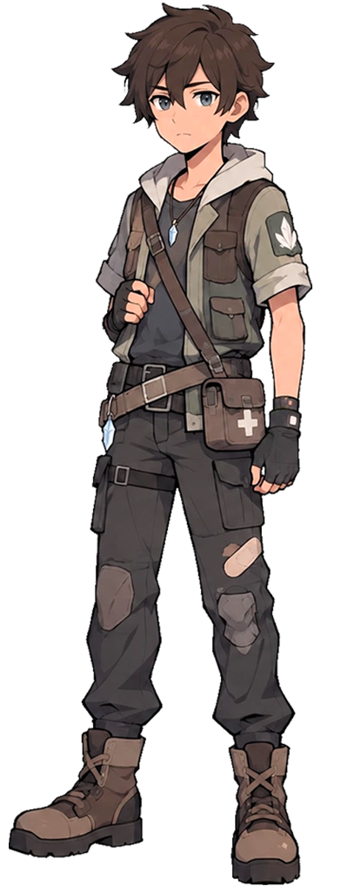
Travel as a young healer and companion caretaker. Learn the rhythms of survival, treatment, recovery, and crystal-linked transformation.
INDIE FANTASY RPG • IN DEVELOPMENT
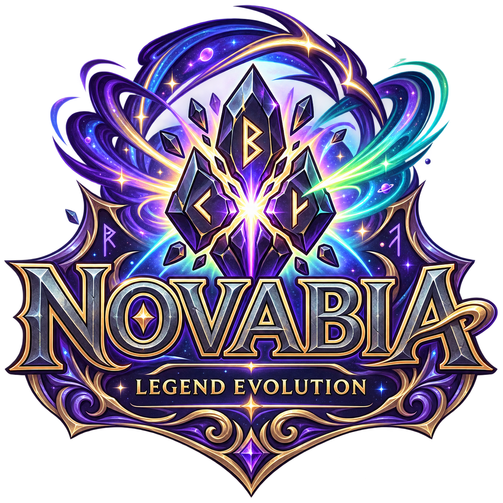
Enter a fractured world of roads, ruins, mountains, magic, and competing philosophies. Choose your origin, build a companion team, and shape evolution through instinct, affinity, training, and discovery.
CURRENT DEVELOPMENT BUILD
Prototype visuals and interface may continue to evolve during development.
THE WORLD
Novabia spans volcanic frontiers, snowy forests, sacred highlands, industrial cities, mystical woods, and ancient lakes. Roads and crossroads connect societies with radically different values — and place your journey at the center of a living continent.
This world is designed not just as a game setting, but as the foundation of the broader Novabia entertainment IP.
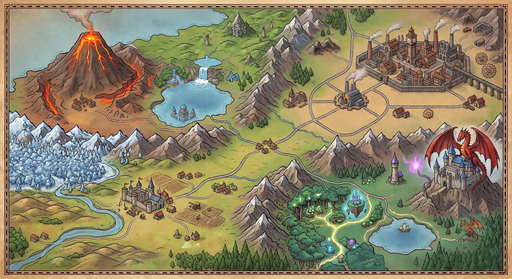
THREE ORIGINS
Each path introduces a different worldview, skillset, and relationship with the world around you.
ELEMENTAL / CARETAKER


Travel as a young healer and companion caretaker. Learn the rhythms of survival, treatment, recovery, and crystal-linked transformation.
KINETIC / DOJO
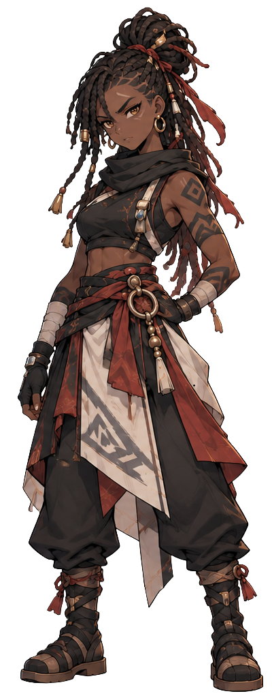
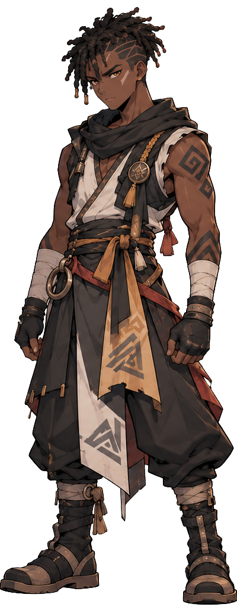
Enter a path of discipline, combat, and rising challenge. Train strength, test conviction, and face rivals through battles that reveal hidden tensions beneath the surface.
LANDSCAPE / MONASTIC
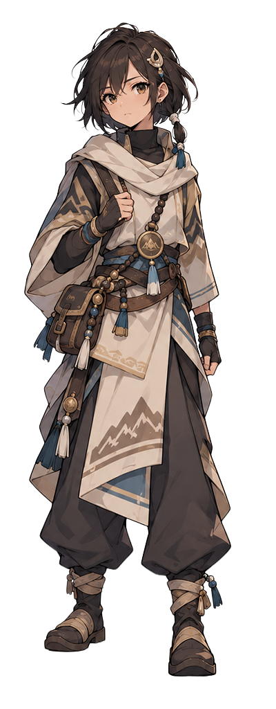
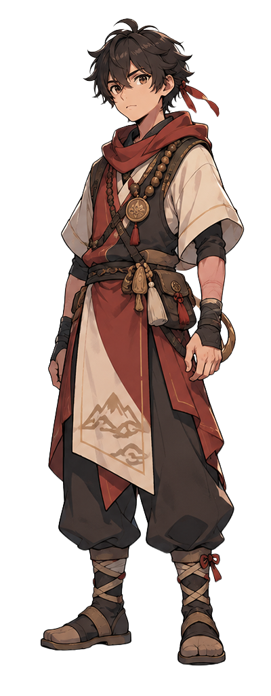
Walk a more reflective road through mountains and sacred spaces, uncovering wisdom, history, and balance between nature, belief, and power.
CURRENT GAMEPLAY BUILD
Novabia is being built as a playable game, not only a world concept. These images are captured from the current development build and show exploration, companion care, combat, progression, and player management systems already taking shape.
Travel through connected areas with an active companion team and route-based progression.
Manage, activate, and care for companions through the clinic system.
Challenge rival companions using distinct moves, types, levels, and combat choices.
Inspect stats, type, rarity, experience, defenses, accuracy, and learned moves.
Track resources, active companions, expedition benefits, equipment, and progress.
Select an avatar and begin a story centered on survival, protection, and the mystery of the crystals.
Development build shown. Art, balance, UI, wording, and systems may change before release.
COMPANIONS & EVOLUTION
Novabia companions are not simple level-ups. Evolution responds to affinity, catalysts, elemental combinations, and instinct — opening multiple outcomes for a single line.
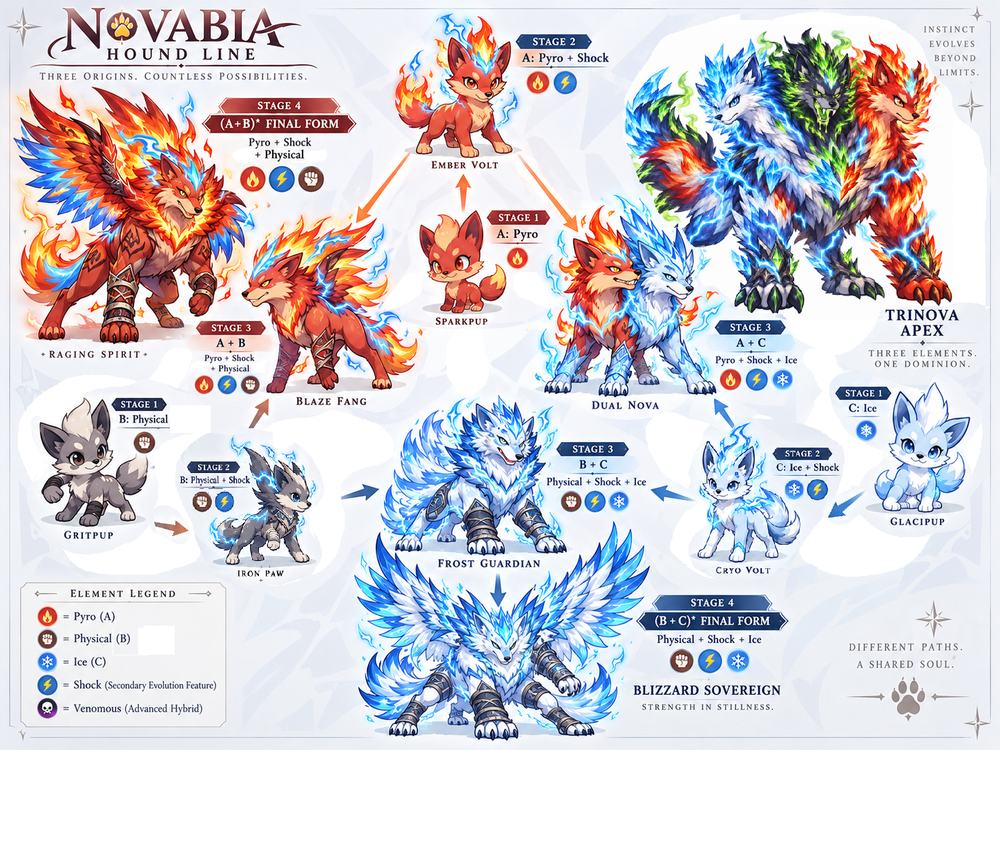
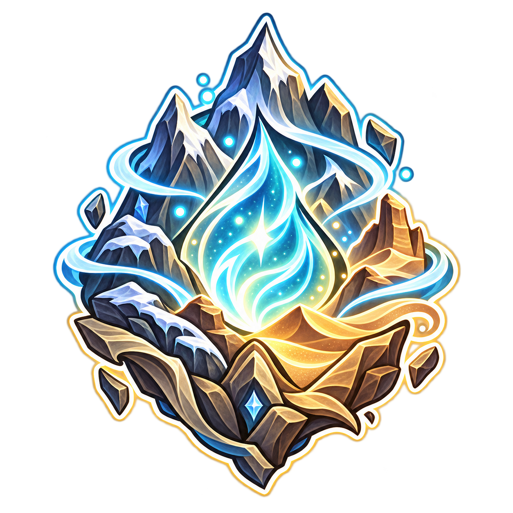
Evolution is tied to identity, environment, and the deeper logic of Novabia's world. Companion growth becomes part of storytelling, strategy, and long-term attachment.
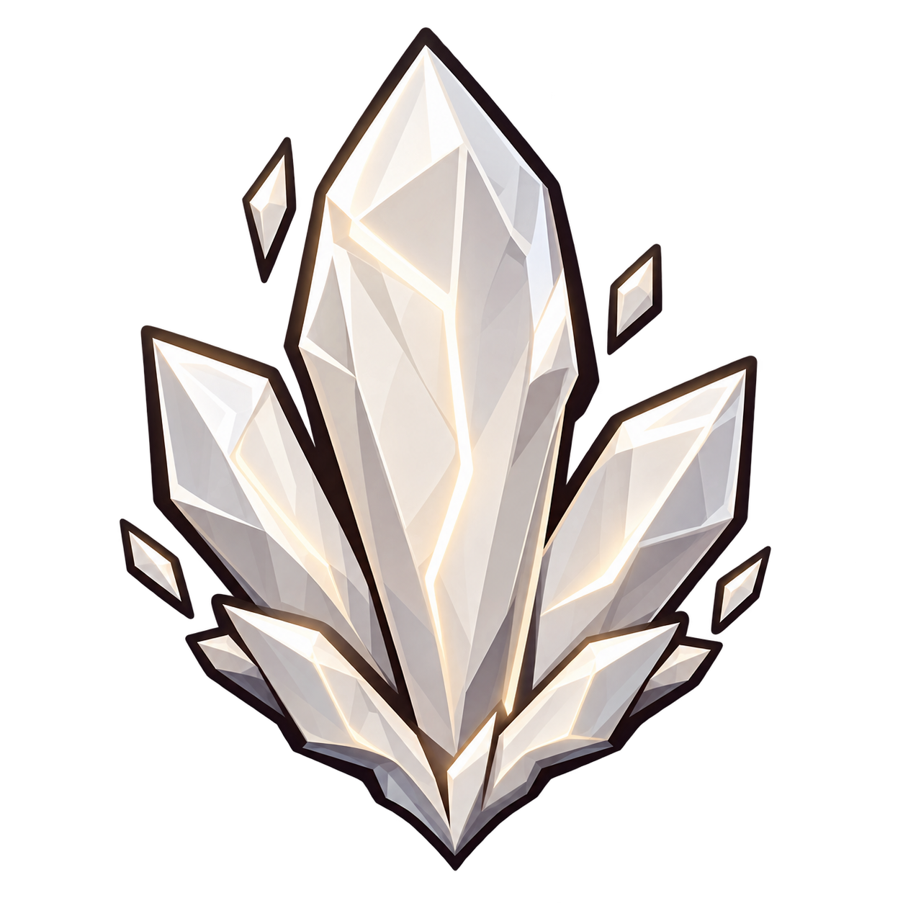
Key catalyst associated with transformation and activation.
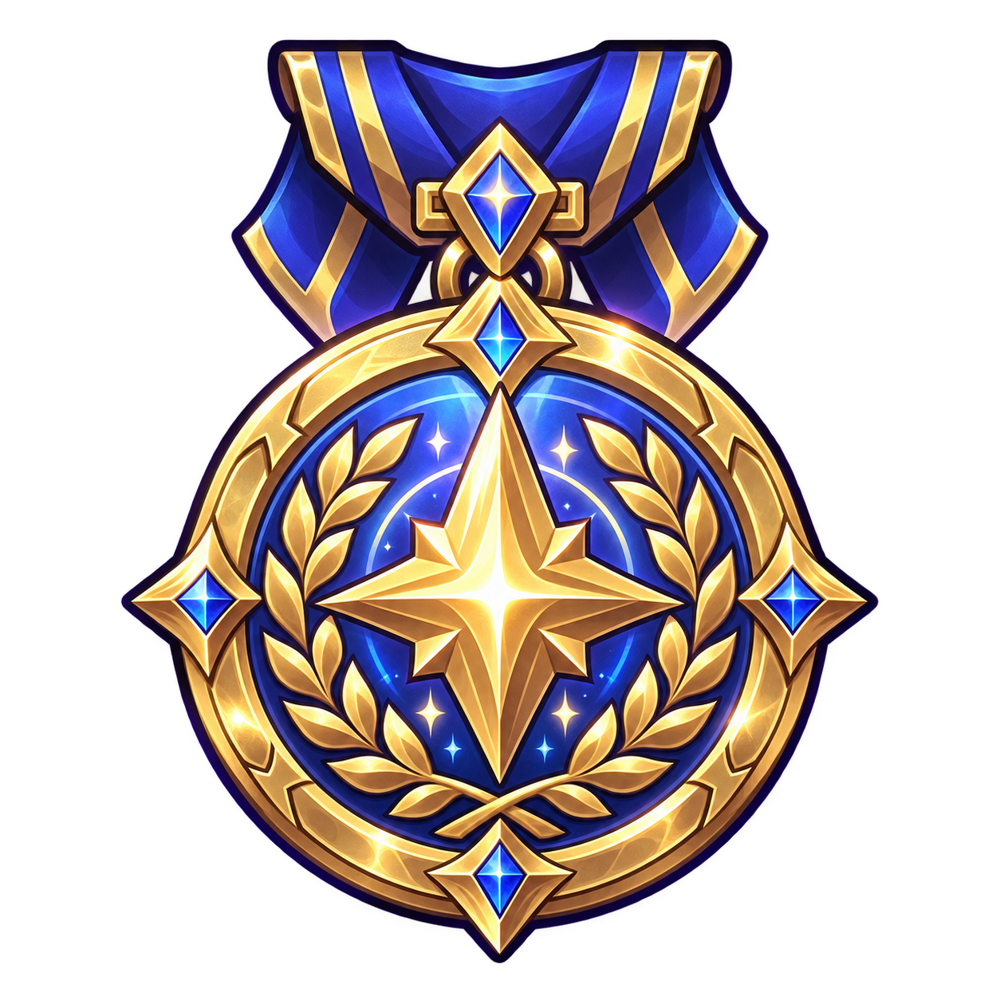
Gathering them allows your Dojo to gain access to the Trade Routes.
SYMBOLS & FACTIONS
Coins, seals, emblems, and icons help define the identities, roles, and powers inside Novabia.
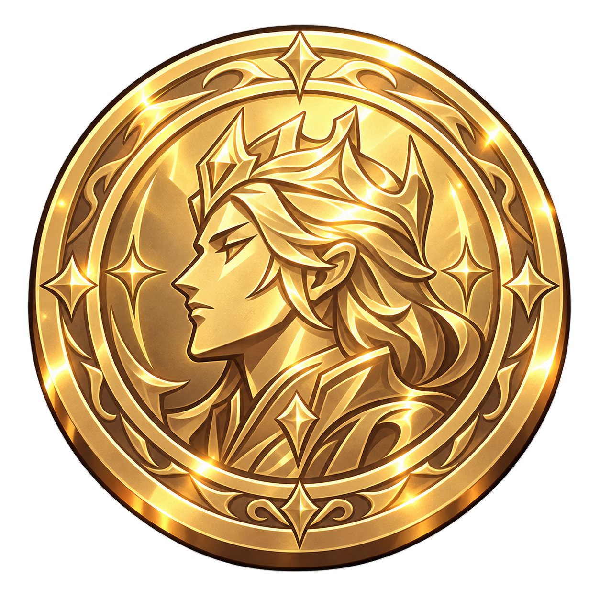
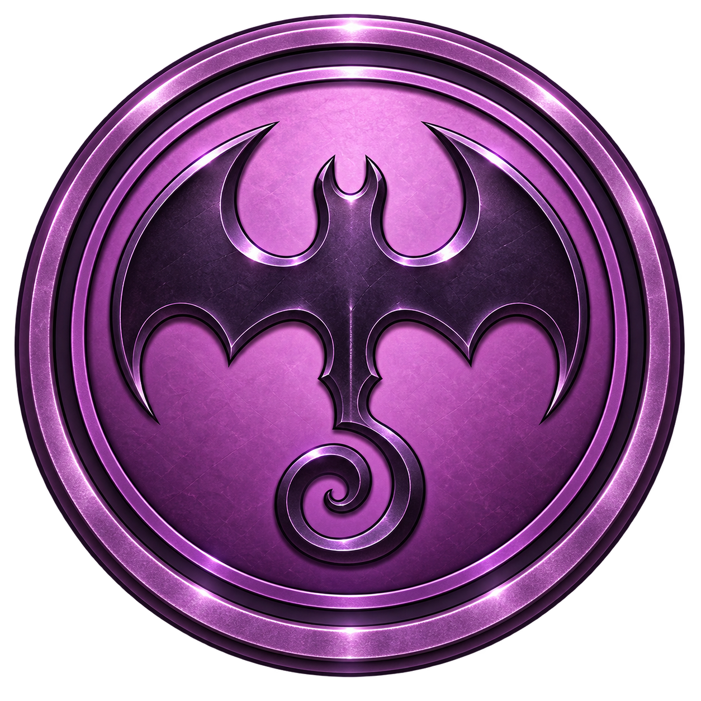
SOUND OF NOVABIA
Early ambient tracks for map and journey mood can be previewed here.
FOLLOW THE JOURNEY